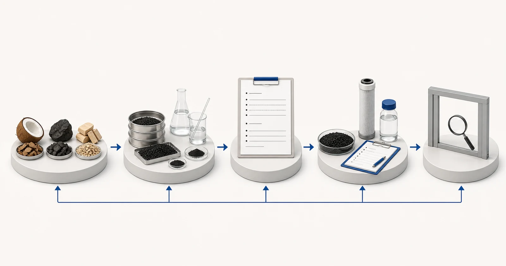

Amsa kai tsaye
Ƙayyadaddun abubuwan da aka kunna-carbon sune abubuwan da aka kwatanta, ba cikakken hasashen aikin filin ba. Harsashi na kwakwa, kwal da itace na iya samar da sifofi daban-daban bayan kunnawa, amma sunaye-yanyen kayan kawai ba sa tantance dacewa. Lambar Iodine ƙima ce kuma bai kamata a gabatar da ita azaman ƙarfin gurɓatawa na duniya ba. Mesh yana bayyana rarraba girman barbashi; ash, danshi da taurin suna magance sauran kaddarorin kayan. Dole ne a bayyana wankin Acid ko wani magani bayan jiyya ta wata ƙayyadaddun shaida da aka kawo. Binciken da ke da alhakin yana haɗa ƙayyadaddun ƙima zuwa fili mai niyya, sunadarai na ruwa, yanayin tuntuɓar, gini da tsarin kula da inganci kafin ba da shawara.
Fara da matsalar mai siye
Shafukan saye galibi suna sanya ƙimar kanun labarai ɗaya kusa da tushen carbon kuma suna gayyatar matsayi mai sauƙi. Wannan gajeriyar hanyar na iya haifar da kurakurai biyu: ƙila ta ƙi kayan da suka dace saboda ƙima guda ɗaya ta yi ƙasa, ko amincewa da abin da bai dace ba saboda ƙimar ta fi girma. Adsorption ya dogara da alakar da ke tsakanin kwayoyin da aka yi niyya, rarraba pore, sunadarai na saman, kwayoyin gasa da yanayin aiki. Takaddun shaida na bincike ya kwatanta kaddarorin da aka zaɓa na samfurin ko kuri'a; ba ya kwaikwayi cikakken tsarin jiyya.
Har ila yau, mai siye ya kamata ya bambanta yawan bayanan kafofin watsa labaru daga shaidar da aka gama. Toshewar carbon ya haɗa da carbon, ɗaure da tsarin masana'anta. Harsashin granular ya haɗa da allo, pads, kayan harsashi da rarraba kwarara. Ko da lokacin da aka yi amfani da nau'in carbon iri ɗaya, ƙãre samfurin na iya ƙirƙirar lamba daban-daban da halin matsin lamba. Saboda haka ƙayyadaddun bayanai suna buƙatar ganowa daga ingantaccen kafofin watsa labarai zuwa gama ginin kuma, inda ya dace, zuwa takamaiman gwajin gurɓatawa.
Wane rahoto da bayanan aiki ake buƙata
Aika manufar magani da rahoton ruwa tare da ƙayyadaddun da aka tsara. Ya kamata bita ta gano waɗanne dabi'u suke sarrafa sayayya, waɗanda sune abubuwan shigar da tsari kuma waɗanda ke buƙatar keɓan gwajin samfurin gama-gari.
- albarkatun carbon da kunnawa ko bayanin bayan jiyya
- lambar aidin tare da hanyar gwaji da tushen rahoto
- girman barbashi ko ragar raga kuma an yarda da ƙarancin girma ko girma
- ash, danshi da taurin tare da hanyoyin gwaji
- matsayin wanke-wanke acid ko wasu magungunan sinadarai da ma'aunin karbuwarsa
- bayyananniyar yawa da tushen marufi inda aka shirya lodin jirgin ruwa
- manufa gurɓatacce, gasa ruwan gasa da yanayin aiki
- yawan ganowa, mitar samfur da buƙatun-bincike
Ya kamata rahoto ya kasance kwanan baya don wakiltar tushen da aka tsara kuma yakamata ya gano kwanan wata da wurin samfurin. Idan ruwan ya canza ta kakar, tsarin samarwa ko yanayin aiki, samar da kewayon maimakon sakamako guda ɗaya mai dacewa. Faɗa makasudin ruwan da ake buƙata daban da nazarin halin yanzu. Lokacin da ba a san ƙima ba, sanya shi a matsayin wanda ba a sani ba; gibin da ake iya gani ya fi aminci fiye da ƙimanta.
Bayanin na'ura mai aiki da karfin ruwa yana kusa da sinadarai. Matsakaicin kwarara shi kaɗai na iya ɓoye gajeriyar yanayi kololuwa, aiki na tsaka-tsaki da tsayin daka. Tabbatar da lokacin aiki na yau da kullun, buƙatu kololuwa, samuwan matsin lamba, asarar matsi mai izini, girman kayan aiki da WHO za su saka idanu da maye gurbin carbon. Waɗannan cikakkun bayanai sun yanke shawarar ko za a iya amfani da ingantaccen kafofin watsa labarai a cikin tsarin aiki.
Dabarun zaɓi
Fara da aikin kowace ƙima. Girman barbashi yana rinjayar halayen hydraulic da samuwa na waje, yayin da tara tara zai iya rinjayar aiki da kayan aiki na ƙasa. Tauri na iya zama dacewa da haɓakawa yayin jigilar kaya, lodi ko wankin baya. Danshi yana rinjayar lissafin taro kamar yadda aka karɓa. Ash yana bayyana ragowar abubuwan da ba na carbon ba a ƙarƙashin hanyar da aka bayyana. Waɗannan sigogi na iya tallafawa sarrafa inganci, amma kowanne dole ne a fassara shi tare da hanyarsa da kewayon karɓa.
Yi la'akari da lambar aidin azaman sakamakon siffa ɗaya, ba alƙawarin kai tsaye na chlorine, PFAS, VOCs, launi ko wata manufa ta magani ba. Carbons guda biyu masu ma'aunin aidin iri ɗaya na iya yin hali daban-daban don wani fili saboda rarraba ramuka da kaddarorin saman sun bambanta. Sabanin haka, bambanci a lambar iodine baya ƙididdige bambancin rayuwar sabis. Ƙayyadaddun shaida da ƙayyadaddun ƙayyadaddun ƙayyadaddun ƙayyadaddun shaida da yanayin aikin sun kasance masu mahimmanci.
Ya kamata albarkatun kasa su jagoranci tambayoyi maimakon kawo karshen zaɓin. Kwakwa-kwakwa, kwal-kwal da kuma carbon na tushen itace ana samar da su daga mabanbanta mabambanta kuma ana iya zaɓar su don ramuka daban-daban ko maƙasudin kulawa, duk da haka masana'anta da zaɓin kunnawa suna da mahimmanci. Nemi ƙayyadaddun mai siyarwa na yanzu, hanyoyin gwaji, takardar shedar kuri'a da aikin sarrafa canji. Idan kafofin watsa labaru za su goyi bayan ƙwararrun samfuri, tabbatar da cewa maye gurbin ana sarrafa su ta hanyar jeri da ƙa'idodin takaddun shaida.

- Tushen tushen kayan abu
- Ƙimar da aka auna
- Hanyoyi da samfurin ganowa
- Rahoton aikin da tushen aiki
- Binciken fasaha
Misalin tunani. Ba sakamakon gwaji, takaddun samfur ko zanen injiniya ba.
Magani, kayan aiki da mahallin aiki
Don tasoshin, ƙayyadaddun ƙayyadaddun bayanai dole ne su haɗa zuwa taro mai yawa, ƙarar gado, faɗaɗa na'ura mai ƙarfi, riƙe allo, wankin baya da sarrafa tara tara. Don harsashi, tabbatar da ko ƙimar ta siffanta saƙon mai jarida kafin kerawa ko abin da aka gama. Ba za a iya siffanta harsashin toshewa da cikakkiyar takardar shaidar carbon-carbon ba, kuma rukunin granular na layi har yanzu yana buƙatar gini, girma da duban matsi.
Binciken mai shigowa yakamata yayi amfani da samfurin da aka yarda da su da hanyoyin. Sakamakon mai kaya da mai siye na iya bambanta idan tushen danshi, shirye-shiryen samfurin ko nau'ikan hanyar ba su daidaita ba. Don haka zance da rikodin yarda yakamata a kawo sigar ƙayyadaddun bayanai kuma su ayyana yadda ake sarrafa kuri'a marasa iyaka. Yuchen Water na iya goyan bayan wannan takaddun da kuma daidaita kayan da aka yarda da harsashi ko kayan aiki.
Kuskuren gama gari
- Rarraba kowane aikace-aikacen carbon ta lambar aidin
- Buga sunan danyen abu azaman da'awar kawar da gurɓataccen abu
- Kwatanta dabi'un da aka samar ta hanyoyi daban-daban ba tare da cancanta ba
- Aiwatar da takardar shedar watsa labarai mai girma zuwa kowane ginin harsashi da aka gama
- Yin watsi da yawan ganowa da sarrafa ƙayyadaddun bayanai
Shaida da iyakar sabis
Ya kamata a gabatar da takardar shaidar bincike a matsayin mai yawa ko shaida ta samfur. Kada a sake rubuta shi azaman garanti na rayuwar sabis, ƙarfin tsarin ko maida hankali. Inda Yuchen Water ke buga bayanan gwajin da aka zaɓa, shafin yakamata ya gano samfurin da aka gwada da kuma sharuɗɗan da aka gwada kuma a gayyaci mai siye don neman shaidar da ta dace maimakon nuna cewa duk samfuran suna raba sakamakon.
Samar da kayan zai iya haɗawa da ƙayyadaddun ƙayyadaddun bita, samuwan takaddun gwaji da tallafin da ya dace da kayan aiki. Dole ne a yarda da ƙimar karɓa, mitar gwaji da da'awar samfur don ainihin tsari. Idan ba a goyan bayan da'awar da ake buƙata ta hanyar shaida na yanzu, ainihin sakamakon bita shine gibin shaida ko gwajin da aka gabatar, ba zato na tallace-tallace ba.
Yuchen Water yana bitar manufa da shaida da farko, sannan ya gano tsarin carbon da ya dace da tambayoyin kayan aiki, tallafawa pretreatment da buƙatun kayan aiki, da takaddun ko gwaje-gwajen da ake buƙata. Fitarwa na iya zama jagora ta farko, buƙatun ɓacewar bayanai, ko shawarwarin kayan tallafi da kayan aiki. Ba a fitar da shawarwarin kawai saboda mai siye ya ba da sunan samfur.
Bayan wadata, goyon bayan fasaha na iya rufe tabbatar da takaddun takardu, shigarwa da tambayoyin ruwa, jagorar ƙaddamarwa mai nisa, wuraren sa ido da shirin maye gurbin cikin iyakar da aka yarda. Ayyukan gaske har yanzu yana dogara ne akan kayan da aka yarda da su, cikakken kayan aiki, ruwa mai tushe, shigarwa, aiki da kulawa. Jagoran da aka buga ba zai iya maye gurbin bitar aikin ba.
Babu wani abu na ƙarshe, iya aiki, rayuwar sabis, kashi cirewa ko sakamakon aikin da aka yi alkawari kafin a sake nazarin rahoton, gini, shaida da yanayin aiki.
Tushen fasaha na hukuma
Waɗannan kafofin sun bayyana ƙa'idodin jiyya ko iyakokin takaddun shaida. Ba sa tabbatar da samfuran Yuchen Water kuma basa maye gurbin takamaiman shaida na aikin.
Jagoran carbon da aka kunna mai alaƙa
Ci gaba ta hanyar gungun ilimin, duba zaɓaɓɓun shaidar samfur kawai a cikin iyakokin da aka bayyana, kwatanta tsarin samfur, ko ƙaddamar da rahoton don nazarin fasaha.